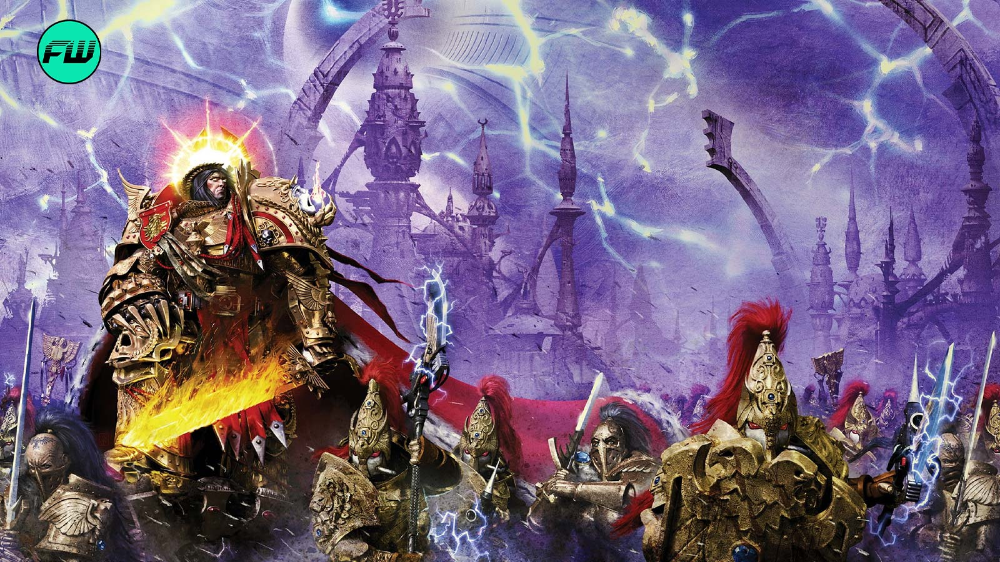

The Emperor of Mankind
The being who unified Terra, built the primarchs and the Adeptus Astartes, and now sits on the Golden Throne. He is the single figure the entire Imperium is built around.

Unification of Terra
Long before the Great Crusade, the Emperor ended the Age of Strife by conquering and reuniting Terra's warring factions under a single rule, closing a dark age of Terra's history.
The primarchs
Using his own genetic material, the Emperor created twenty superhuman sons, the primarchs, meant to lead his armies. A warp incident scattered their gestation capsules across the galaxy before he could raise them himself.
The Adeptus Astartes
From the same source material, he created the Space Marine gene-seed, allowing lesser but still superhuman warriors to be produced in numbers no primarch bloodline alone could match.
The Great Crusade
With his primarchs found and returned to him one by one, the Emperor launched a centuries-long campaign to reconquer humanity's lost colonies and reunite them under the nascent Imperium.
Wounded at the Siege of Terra
When his favoured son Horus turned traitor and led half the Imperium's forces against Terra itself, the Emperor fought Horus in single combat and struck him down, but was himself grievously wounded in the exchange.
The Golden Throne
Kept from death only by the life-support systems of the Golden Throne, the Emperor has ruled in near-silence for ten thousand years. The Throne also powers the Astronomican, the psychic beacon that makes interstellar navigation possible for the entire Imperium.
The Imperial Cult that reveres the Emperor as a god formed largely after his wounding, built and enforced by the Imperium's institutions rather than by his own design. During his active rule he was known to reject the idea of being worshipped outright. Ten thousand years later, that cult is one of the Imperium's central pillars regardless.